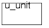

All rights reservedCopyright ©2006 Fastpath Logic, Inc. Copying in any form without the expressed written permission of Fastpath Logic, Inc is prohibited
2.1 CSL Interconnect Command Summary
2.2 CSL Interconnect Commands
We will now describe the CSL interconnect specification commands. The CSL interconnect specification commands are used to create new unit instances and to connect the instances. The modules have port interfaces or the ports can connect to ports in which are used to connect the modules to signals. The ports can connect to an expression in a parent module or the ports can connect to ports in other instances in the same module or the ports can connect to the ports in the parent module. Connecting ports to logic in a higher level is not recommended.
2.2.1 Signals
The following section describes signals. Signals connect objects. The default type for a signal is a wire. A wire needs to be driven at all times. If it is not driven then the value on the wire is undefined and the wire is treated as a don't care by the synthesis tools. A don't care can be a zero or a one.
The signal can be created inside or outside a CSL unit's scope.
Signals can be declared inside signal-group and testbench.
[ CSL Interconnect Command Summary ]
In this example is shown a data check unit that uses a reference and a comparator. The connection between the reference and the comparator is made using a 8-bit signal called ref_data.
Creates a new signal with the name signal_object_name0 by copying the signal object signal_object_name1 passed as constructor argument.Signal_object_name1 can also be a hid (copy from another scope).
[ CSL Interconnect Command Summary ]
Creates two units named comp1 and comp2 , a reference unit named ref and a top unit. In the top unit are defined two signals x , y .
Creates a signal object named signal_name. Optionally the type and width of the signal can be specified: signal_data_type specifies the type and can take any of the values in table Signal Types ; Width specifies the width of the signal and can be a numeric expression.
[ CSL Interconnect Command Summary ]
The example shows two connected units (a sender and a receiver).Each has a 4 bit port and are interconnected by a 4 bit signal in the top unit.
Creates a signal named signal_object_name. The constructor takes as parameters two numeric expressions (upper_limit and lower_limit) that represent the MSB (most significant bit) and LSB (least significant bit) of the bitrange associated with the signal. Optionally, the signal_data_type parameter can be specified setting the type of the signal to reg or wire, tri etc.
[ CSL Interconnect Command Summary ]
In this example are three units: a sender called send, a receiver unit called rcv and a global unit called top. The send unit has a 2-bit output port. The rcv unit has an input port with 2 bits width. The top unit has a 2 -bit signal called d_out .
Creates a signal named signal_name with bitrange bitrange_object_name. Every signal object has a bitrange object attached by default. The default bitrange width for a newly created signal is 1. If a signal is created and the constructor uses a bitrange object as a parameter, a copy of that bitrange object is associated with the particular signal; the bitrange parameter can be a previously defined bitrange object or it can be an anonymous bitrange (defined on the spot). Optionally, the signal_data_type parameter can be specified setting the type of the signal to reg or wire, tri etc.
[ CSL Interconnect Command Summary ]
In this example a bitrange_object named br1 is passed as a parameter to one signal named dif_sgn.
Set the width of a single dimensional signal. The bitrange of the signal is automatically created from the width and can be retrieved using get_bitrange() function. If width has already been set the cslc will flag an error.
[ CSL Interconnect Command Summary ]
In the example from Figure 2.6 is illustrated the use of signal data to connect a and b units inside a top unit. The width of the signal is set using set_width commands.
Returns the width of a single dimensional signal, otherwise it generates a cslc compile time error.
[ CSL Interconnect Command Summary ]
In the example from Figure 2.7 is illustrated the use of signals to connect snd and rcv units inside a trans unit. The width of the signals is set using set_width and get_width commands.
Sets the bitrange object of a signal. The bitrange object passed as a parameter to the set_bitange() method must already be declared. After the assigment of the bitrange the signal contains a reference to the bitrange object bitrange_object_name.
[ CSL Interconnect Command Summary ]
In the example from Figure 2.8 is illustrated the use of a signal to connect a and b units inside a top unit. The width of the signal is set using set_bitrange commands.
Returns a bitrange object. The return type of this function is an object of type bitrange.
[ CSL Interconnect Command Summary ]
In the example from Figure 2.9 is illustrated the use of signals to connect snd and rcv units inside a trans unit. The width of the signals is set using set_bitrange and get_bitrange commands.
Set the bitrange for the signal_object_name using the upper_limit and lower_limit delimiters.This method does not have a corresponding get method.
[ CSL Interconnect Command Summary ]
In this example we have one 32-bit signal named reg_out which connect a register called reg and a comparator called comp. The width of signal is set using set_range command.
Returns the lower index value for the signal_object_name.
[ CSL Interconnect Command Summary ]
In this example, the lower index of a signal can be set explicitly or it can be the result of a get method applied on another object.
Return the upper index value for the signal.
[ CSL Interconnect Command Summary ]
In this example, the return value of the get_upper_index() method is used to set another upper index. Since the return value is an int, it can also be used in other contexts where an int parameter would be allowed.
2.2.1.1 Signal Types
The CSL language will create additional type information for signals. The additional attributes information will be used to check that signals of compatible types are connected to each other. The type information in the CSL is declared. There are two different ways to set the signal type.
Assign a net type to signal_object_name. Applies to both signals and ports. Csl_signal_type specifies the type of signal and can take any of the values in table Signal Types;
TABLE 2.3[ CSL Interconnect Command Summary ]
This example illustrates the set_type() method applied on both signal objects and port objects
Returns the type of the signal object or port object for which is called.
[ CSL Interconnect Command Summary ]
This example illustrates the use of get_type() method combined with set_type(). This way, signal/ports dependencies are created.
Assign an attribute to signal_name. Attributes describe what the signal is used for in the design. An attribute listing is given in Table 2.4
[ CSL Interconnect Command Summary ]
We want to interconnect three instances of a flip flop ,ff_1 ,ff_2 and ff_3.The module top contains both ff_1, ff_2 and ff_3 and additionally stall and data_in, data_out signals.When the autorouter is called, it connects the ports and signals which have the same attribute and pertain to units in a sibling relationship.
Returns the attribute of signal_object_name. Attributes describe what the signal is used for in the design. An attribute listing is given in Table 2.4.
It can only be called on a signal object and returns an object of type csl_signal_attr .
[ CSL Interconnect Command Summary ]
We want to interconnect three instances of a flip flop ,ff_1, ff_2 and ff_3.The module top contains both ff_1, ff_2 and ff_3 and additionally stall and data_in, data_out signals.When the autorouter is called, it connects the ports and signals which have the same attribute and pertain to units in a sibling relationship.
Assign an attribute to signal_object_name. Attributes describe what the signal is used for in the design. An attribute listing is given in Table 2.5
[ CSL Interconnect Command Summary ]
We want to interconnect two instances of a flip flop ,ff_1 and ff2.The module top contains both ff1 and ff2 and additionally clock and enable signals.When the autorouter is called, it connects the ports and signals which have the same attribute and pertain to units in a sibling relationship.
2.2.1.2 Grouping Signals
Signals can be grouped together and assigned a symbolic name. The great advantage of using signal groups is evident when we intend to connect the objects in our design.Instead of connecting tens of wires to tens of ports we just connect a group of signals(a signal group in CSL) to a group of ports(an interface in CSL).
This connection can be done manually(using the connect command ) or automatically by the autorouter.In the first and third case,we must have the signals in the signal group and the ports in the interface put in the order of the connection preference so that the port and the signal we want to connect have the same index in the both lists.
Creates a signal group named signal_group_name. Csl_signal_group is a scope delimited by curly braces and it contains a constructor. Inside the scope are declared the signals from group.
[ CSL Interconnect Command Summary ]
In this example are three units: u1, u2 and top. The top unit contains u1 and u2 units and a signal group named SG with signals x_d, y_d, z_d.The u1 and u2 units have the interfaces ifc1 and ifc2 which are connected with the signal group SG. The interface ifc1 has 3 output ports called x, y, z and ifc2 has 3 input ports called x, y, z.
When this is set to on, as the group "traverses" scopes the autorouter component will generate a port for each signal inside the group. If it is set to off (default behaviour), the grouped signals will be "merged" into a single port as they come across scope boundaries, else if the status is set to true, the grouped signals will be used as individual ports.
[ CSL Interconnect Command Summary ]
In the example we have one unit u wh
itch contain a signal-group SG with signals x_d, y_d, z_d. It was use the command generate_individual_rtl_signals(on) for generate a port for each signal inside the SG group.
Will returns the sum of all widths of the signals in the signal_group named signal_group_object.
[ CSL Interconnect Command Summary ]
The example shows one signal group named SG which contains three signals with different widths, and a signal named sig1. The width of signal sig1 is set to be equal with width of signal_group using the commands set_width and get_width().
2.2.1.3 Units
CSL Units act like Verilog modules. Units can be instantiated within other units. A unit represents a scope and every variable, signal, or port defined in that unit will have its name prepended with the unit name.
CSL unit class declaration. For definition see 2.2.1.3 Units above. It represents a scope delimited by curly braces and contains a constuctor.
The CSL unit class declaration alone does not translate into a Verilog module. Only a unit definition results in a Verilog module.
[ CSL Interconnect Command Summary ]
In the following example is a unit called u_unit .

2.2.1.4 Units:Ports
A port is a directed signal type. Ports are declared in the interface of a unit or in an unit
and are used to make connections (input or output signals, or both).
Port object declaration. These types can be declared inside a unit class definition and are thus added to the unit's default interface, or inside an interface definition and become part of the respective interface. Parameters that can be passed to a port declaration are:
port direction, specifying the direction of the signal passing through the port;
port type, details the signal type passing through the port
range, specifies the range of the port and can be a bitrange object, a width numeric expression or a upper index, lower index pair of numeric expressions
[ CSL Interconnect Command Summary ]
In this example is a unit called a which contains an interface called ifc. The interface has two ports : x and y;
This acts like a copy constructor for a port object. The port_name object is created by copying all the properties found in the port object specified by the port_hierarchical_identifier (port_direction, port_type and range).
In this example is a unit called a which contains an interface called ifc. The interface has two ports : x and y;
Reverse the direction of a port. This method is called on a port object and it reverses its direction.
This method can only be called for input/output ports, otherwise the function has no effect and a warning is produced.
[ CSL Interconnect Command Summary ]
In this example it use the method reverse() to change the direction of the ports x and y.
This command adds all the ports from an interface object (or only ports specified by the optional parameter port_direction) the default interface of the unit. This can be useful when there is a need to have the port names in the generated verilog code without interface names appended.
[ CSL Interconnect Command Summary ]
In the following example the ports x and y are introduced in a csl_list which was added to the
Set the width of a port. The bitrange of the port is automatically created from the width and can be retrieved using get_bitrange() function. If width has already been set the cslc will flag an error.
In the example from Figure 2.6 is illustrated the use of signal data to connect a and b units inside a top unit.The a unit has an output port called x and the b unit has an input port called y. The width of the ports is set using set_width command.
Returns the width of a port, otherwise it generates a cslc compile time error.
[ CSL Interconnect Command Summary ]
In the example from Figure 2.7 is illustrated the use of signals and ports to connect snd and rcv units inside a trans unit. The width of the ports is set using set_width and get_width commands.
Sets the bitrange object of a port. The bitrange object passed as a parameter to the set_bitange() method must already be declared. After the assigment of the bitrange the port contains a reference to the bitrange object bitrange_object_name.
[ CSL Interconnect Command Summary ]
In the example from Figure 2.8 is illustrated the use of a signal and input/output ports to connect a and b units inside a top unit. The width of the ports is set using set_bitrange commands.
Returns a bitrange object. The return type of this function is an object of type bitrange.
[ CSL Interconnect Command Summary ]
In the example from Figure 2.9 is illustrated the use of signals to connect snd and rcv units inside a trans unit. The width of the ports is set using set_bitrange and get_bitrange commands.
Set the bitrange for the port_object_name using the upper_limit and lower_limit delimiters.This method does not have a corresponding get method.
[ CSL Interconnect Command Summary ]
In this example we have one 32-bit signal named reg_out which connect a register called reg and a comparator called comp. The width of ports out and in is set using set_range command.
Returns the lower index value for the port_object_name.
[ CSL Interconnect Command Summary ]
In this example, the lower index of a port can be set explicitly or it can be the result of a get method applied on another object.
Return the upper index value for the port.
[ CSL Interconnect Command Summary ]
In this example, the return value of the get_upper_index() method is used to set another upper index. Since the return value is an int, it can also be used in other contexts where an int parameter would be allowed.
Assign a net type to port_object_name. Applies to both signals and ports.The csl_port_type can be one of the port types from Table 4.11Port types .
[ CSL Interconnect Command Summary ]
This example illustrates the set_type() method applied on both port objects and signal objects
Returns the type of the port object or signal object for which is called port_object_name.
[ CSL Interconnect Command Summary ]
This example illustrates the use of get_type() method combined with set_type(). This way, signal/ports dependencies are created.
Assign an attribute to port_object_name. Attributes describe what the port is used for in the design. An attribute listing is given in Table 2.4
[ CSL Interconnect Command Summary ]
We want to interconnect three instances of a flip flop ,ff_1 ,ff_2 and ff_3.The module top contains both ff_1, ff_2 and ff_3 and additionally stall and data_in, data_out signals.When the autorouter is called, it connects the ports and signals which have the same attribute and pertain to units in a sibling relationship.
Returns the attribute of port_object_name. Attributes describe what the port is used for in the design. An attribute listing is given in Table 2.4.
It can only be called on a port object and returns an object of type csl_port_attr .
[ CSL Interconnect Command Summary ]
We want to interconnect three instances of a flip flop ,ff_1, ff_2 and ff_3.The module top contains both ff_1, ff_2 and ff_3 and additionally stall and data_in, data_out signals.When the autorouter is called, it connects the ports and signals which have the same attribute and pertain to units in a sibling relationship.
2.2.1.5 Units: Interface
The interface is a container inside of a csl unit which holds all the ports of that unit. The interface sets the connections for a unit.
Create a new interface object named interface_object_name. This object holds the port list for a unit and vector descriptions for the port signals.
[ CSL Interconnect Command Summary ]
In this example two interface objects are created, modified and then assigned to different units.
Reverse will invert the input ports and make them output ports, while the output ports will become input ports for interface_name.. Reverse will not change inout, tri. Reverse cannot be used with interfaces that have wand or wor types; interface_object_name is the name of a list of ports - this will cause a compiler error.
[ CSL Interconnect Command Summary ]
In this example two interface objects are created, modified and then assigned to different units. Using the method reverse() we will change the directions of ports from the instance q0 of interface p. The output ports will become inputs and the input ports will become outputs.
Will return the sum of all widths of the ports in the interface.
[ CSL Interconnect Command Summary ]
The example shows an interface named p which contains three ports with different widths, and a port named p0. The width of port p0 is set to be equal with width of interface using the commands set_width and get_width().
2.2.1.6 Units: parameter
Create a unit parameter in unit_object_name with the name parameter_name and the default value default_value.
[ CSL Interconnect Command Summary ]
The unit hierarchy example shows how to add parameters to unit declarations.
When instantiating a unit, the default value of the units' parameters (if any) can be overridden by using the above syntax. Note that more parameters can be overridden (separated by commas) and the order of the override values, operates on unit parameters in the order the parameters are declared.
[ CSL Interconnect Command Summary ]
The unit hierarchy example shows how to override the parameters of each instance.
2.2.1.7 Units: prefix
Sets the signals within the unit_object_name with the prefix specified by prefix_string. Because some signals may be bound to ports, the same prefix is applied to these ports. Optionally the user can choose to apply prefix_object_name only to the unit interface or it's local elements by adding the IFC_ONLY or LOCAL_ONLY prefix pecifiers . Default both specifiers are active.
[ CSL Interconnect Command Summary ]
Sets the prefix " box1" for the unit Block.
Returns the unit_object_name's string_prefix.
[ CSL Interconnect Command Summary ]
Sets the prefix "box1" for the unit u2 using get_unit_prefix method().
Sets the signals within the unit_object_name with the prefix specified by prefix_string. Because some signals may be bound to ports, the same prefix is applied to these ports.
[ CSL Interconnect Command Summary ]
The example shows who to set a prefix to one or more signals.
Returns the signal_prefix and the port_prefix previously set by the set_signal_prefix() command.
[ CSL Interconnect Command Summary ]
The example shows who to set a prefix to a signal named v12 using get_signal_prefix() method.
All the local signals previously declared within the same specific unit are prefixed with the prefix_string passed as a command argument. The difference between set_signal_prefix() and set_signal_prefix_local is that that the first command prefixes both local signals and ports (ports are signals with direction: input, output or inout, therefore not local), and the second command only prefixes local signals.
[ CSL Interconnect Command Summary ]
The example shows who to set a local prefix "uv" to v1 and v2 signals .
Returns the local signal prefixes that have been set by a previous set_signal_prefix_local() command. This command does not affect ports (ports are not local signals).
[ CSL Interconnect Command Summary ]
Sets a local prefix "uv2" for signal v2 using the get_signal_prefix_local() method.
2.2.1.8 Units: input/output file type
2.2.1.9 Units: instance control bit
Set the instance alteration bit to asserted (on) or disserted (off) with the status enum parameter. When instance alteration is allowed (on) other objects can be added to instances. Note that this triggers a hierarchical modification down to the unit prototype the instance was derived from. When instance alteration is disallowed (off) instances cannot be modified, except by parameter override methods. Default setting for unit alteration is off (off).
[ CSL Interconnect Command Summary ]
In this example the instance alteration bit is allowed (on) for the instances of unit u.
2.2.1.10 Signal operations
Performs the operation merge_op on the signals in list_of_signals and assigns the output of the merge operation to signal_object_name. The merge operations are in the following table.
[ CSL Interconnect Command Summary ]
Performs the merge operations "xor" between three signals and "or" between two signals. The results of operations is sig1 for "xor" and sig2 for "or".
Performs the operation merge_op on the signals in list_of_signals and assigns the output of the merge operation to signal_object_name.The merge operations are in the following table.
[ CSL Interconnect Command Summary ]
In this example is performed the merge operations "or " and " and" between the signals a1 and a2 from a signal list named s1.The result is signal sig.
2.2.1.11 New commands
Set unit ID to numeric expression.
[ CSL Interconnect Command Summary ]
In this example is set the unit ID "4" for the instance of unit u.
This generates a port called unit_name_en. This port is an enable signal for the internal unit address decoder.
[ CSL Interconnect Command Summary ]
This generates a unit address decoder which is optionally enabled by unit_name_en. The input to the address decoder is an input port or signal named address_signal_name. The outputs of the decoder are named unit_name_addr_dec_[0-2^n-1] where n is the width of the address_signal_name.
[ CSL Interconnect Command Summary ]
//small description of the example
[ CSL Interconnect Command Summary ]
//small description of the example
2.2.1.12 Merge command
Merge commands are used to merge n signals together. The type of merge operation performed is one of the following:
The signals are individually op-ed with the var or constant to produce a new vector of n signals. Note that the var or const is either 1 bit or n bits wide register. Concatenate the n signals together and register the concatenated vector.
|
Quadralay Corporation http://www.webworks.com Voice: (512) 719-3399 Fax: (512) 719-3606 sales@webworks.com |